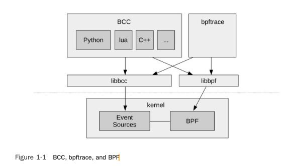
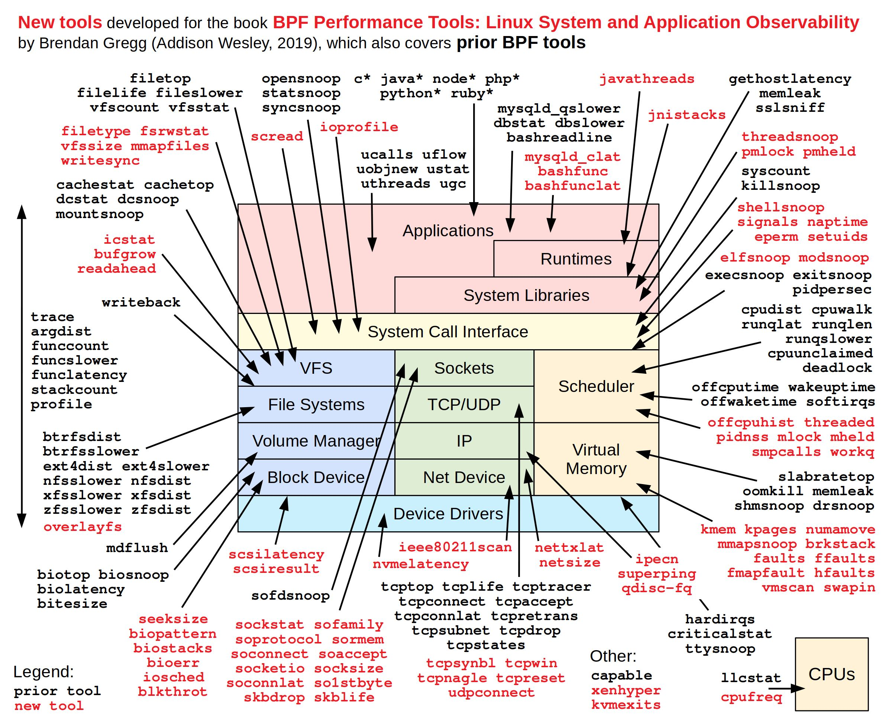
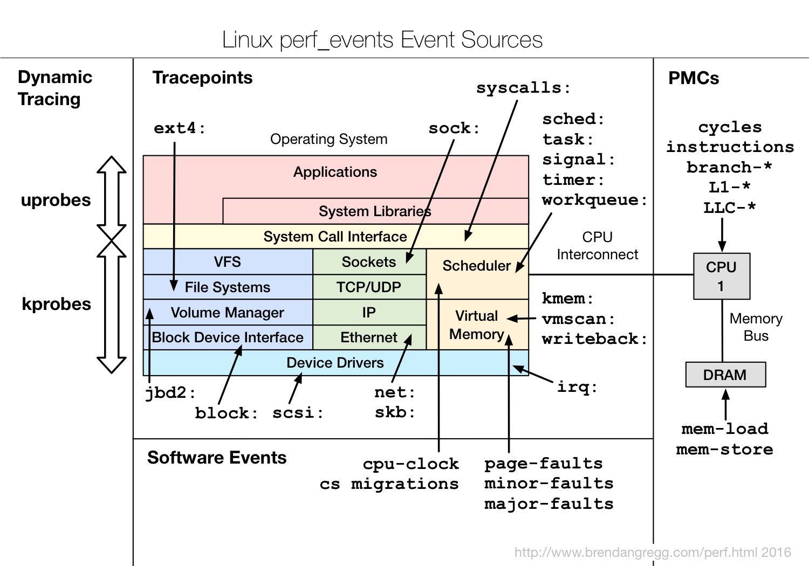
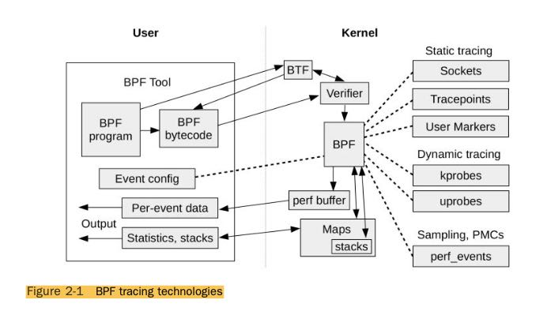
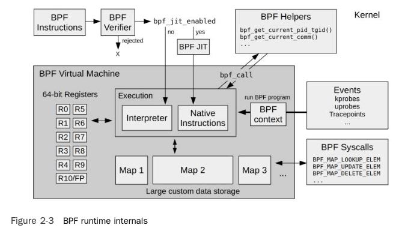
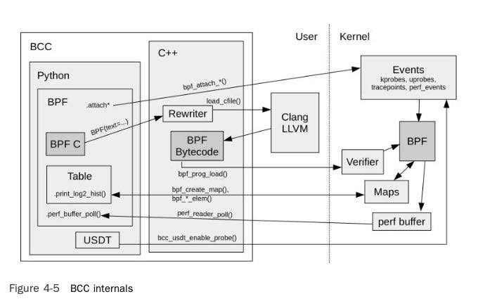
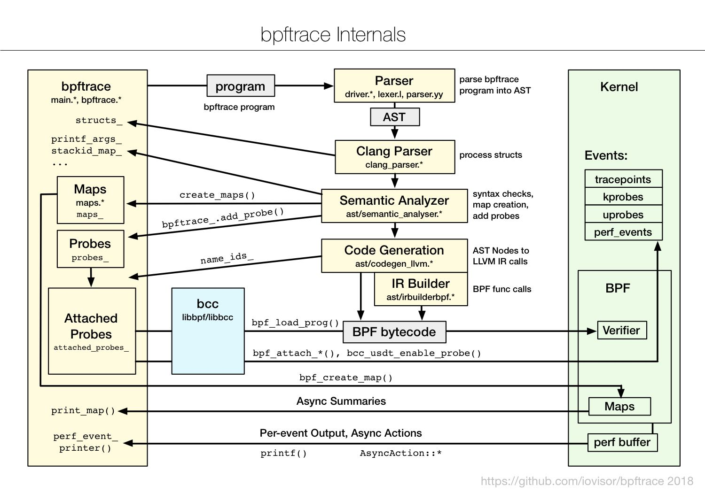

BPF Performance Tools
Linux System and Application Observability
bcc/bpftrace/bpf之间的关系
- BCC是BPF编译器集合，允许用户使用C语言来编写BPF(编译成为BPF). 外部脚本来控制BPF的运行，收集数据，加工数据，展示结果等等。
- bpftrace有自己的语言比较类似于C但是有诸多限制，最后也编译成为BPF. 通常比较适合编写单行程序，不太方便做复杂的分析。
- BPF是一个被编译进入内核，在内核态执行，具有JIT功能的虚拟机。

BCC (BPF Compiler Collection) was the first higher-level tracing framework developed for BPF. It provides a C programming environment for writing kernel BPF code and other languages for the user-level interface: Python, Lua, and C++. It is also the origin of the libbcc and current libbpf libraries,3 which provide functions for instrumenting events with BPF programs. The BCC reposi- tory also contains more than 70 BPF tools for performance analysis and troubleshooting. You can install BCC on your system and then run the tools provided, without needing to write any BCC code yourself. This book will give you a tour of many of these tools.
bpftrace is a newer front end that provides a special-purpose, high-level language for develop- ing BPF tools. bpftrace code is so concise that tool source code is usually included in this book, to show what the tool is instrumenting and how it is processed. bpftrace is built upon the libbcc and libbpf libraries.
BCC and bpftrace are pictured in Figure 1-1. They are complementary: Whereas bpftrace is ideal for powerful one-liners and custom short scripts, BCC is better suited for complex scripts and daemons, and can make use of other libraries. For example, many of the Python BCC tools use the Python argparse library to provide complex and fine control of tool command line arguments.
使用bpf可以观测的点非常多 link
{kind=link}

使用bpf观测时候需要进行打点，在不同点上执行某些代码，然后汇总起来形成全貌。这些点可以分为下面几类：
- kprobes/uprobes: dynamic instrumentation. 可以认为这些都是二进制中的函数符号，在函数入口和出口可以进行打点。好处是比较动态，坏处就是这些函数符号并不会被维护，不同二进制之间符号会变化甚至语义都不同。
- tracepoints/USDT(user-level defined tracingpoint): static instrumentation. 同样是二进制中的符号（不必限于是函数符号），这些都是静态点，代码作者通常会长期维护它。
- software/hardware: 软件(major-faults)和硬件事件(branch-miss), 可以参考perf events
- profile/interval: 这两个都是时间间隔采样，profile针对所有的CPU进行定时采样，而interval则是在单个CPU上触发主要用来做定时任务用。
| Probe | Description |
|---|---|
| kprobe:vfs_read | Instrument the beginning of the kernel vfs_read() function |
| kretprobe:vfs_read | Instrument the returns6 of the kernel vfs_read() function |
| uprobe:/bin/bash:readline | Instrument the beginning of the readline() function in /bin/bash |
| uretprobe:/bin/bash:readline | Instrument the returns of the readline() function in /bin/bash |
| tracepoint:syscalls:sys_enter_open | Instrument the open(2) syscall |
| usdt:/usr/sbin/mysqld:mysql: query__start | Instrument the query__start probe from /usr/sbin/mysqld |
tracepoint:
- tracepoint:syscalls:sys_enter_read
- tracepoint:syscalls:sys_exit_read
usdt:
- usdt:binary_path:probe_name
- usdt:library_path:probe_name
- usdt:binary_path:probe_namespace:probe_name
- usdt:library_path:probe_namespace:probe_name
kprobe/uprobe:
- kprobe:function_name
- kretprobe:function_name
- uprobe:binary_path:function_name
- uprobe:library_path:function_name
- uretprobe:binary_path:function_name
- uretprobe:library_path:function_name
software/hardware // count 表示触发采样次数
- software:event_name:count
- software:event_name:
- hardware:event_name:count
- hardware:event_name:
profile/interval // rate 表示数值
- profile:hz:rate
- profile:s:rate
- profile:ms:rate
- profile:us:rate
- interval:s:rate
- interval:ms:rate
{kind=link}

kprobe/uprobe实现原理上都是动态更换指令（不过我没有明白如果多个用户同时打点的话会不会有问题）。对于kprobe的话，将入口指令更换成为int3或者是jmp, 跳转handler, 而handler里面保存好原来函数的下一条指令。对于kretprobe, 则是在进入函数的时候记录返回地址，修改返回地址跳转到handler上。uprobe相比kprobe，还可以针对二进制文件进行记录，所以执行这个二进制的实例都可以进行采样。
Modifying kernel instruction text live may sound incredibly risky, but it has been designed to be safe. This design includes a blacklist of functions that kprobe will not instrument, which include kprobes itself, to avoid a recursive trap condition. kprobes also make use of safe techniques for inserting breakpoints: the x86 native int3 instruction, or stop_machine() when the jmp instruction is used to ensure that other cores do not execute instructions as they are being modified. The biggest risk in practice is instrumenting a kernel function that is extremely frequent: if that happens, the small overhead added to each invocation can add up, slowing down the system while the function is instrumented.
uprobes are similar to kprobes, but for user-space processes. uprobes can instrument user-level function entries as well as instruction offsets, and uretprobes can instrument the return of functions.
uprobes are also file based: When a function in an executable file is traced, all processes using that file are instrumented, including those that start in the future. This allows library calls to be traced system-wide.
tracepoints/USDT实现原理和kprobe/uprobes也比较类似，也相当于是动态修改指令。但是不用像kprobe/uprobe那样做trampoline, 编译的时候在打点上加入足够大的nop指令，当进行测量的时候将nop更换成为jmp到一个handler上，handler的结尾就是nop之后的指令。
BPF工作方式如下图：
- BPF是一个带有JIT功能虚拟机
- BPF在kernel层面上执行并且尽可能地聚合数据
- Verifier可以检查BPF Inst判断执行是否会影响内核
- BTF(BPF Type Format) 类似二进制中的debuginfo信息


既然BPF是一个虚拟机那么就有vmcode, 现在可以使用LLVM来将C编译成为这种vmcode. 想要查看系统内部bpf的话可以使用 `bpftool`, 比如那些bpf在跑，bpf的vmcode如何等等。
BPF can be programmed via one of the many front ends available. The main ones for tracing are, from lowest- to highest-level language:
- LLVM
- BCC
- bpftrace
The LLVM compiler supports BPF as a compilation target. BPF programs can be written using a higher-level language that LLVM supports, such as C (via Clang) or LLVM Intermediate Representation (IR), and then compiled into BPF. LLVM includes an optimizer, which improves the efficiency and size of the BPF instructions it emits.
While developing BPF in LLVM IR is an improvement, switching to BCC or bpftrace is even better. BCC allows BPF programs to be written in C, and bpftrace provides its own higher-level language. Internally, they are using LLVM IR and an LLVM library to compile to BPF.
BCC internals

bpftrace internals
{kind=link}

Linux 60-Second Analysis
This checklist can be used for any performance issue and reflects what I typically execute in the first 60 seconds after logging into a poorly performing Linux system. This was published by myself and the Netflix performance engineering team [56]: The tools to run are:
- uptime
- dmesg | tail
- vmstat 1
- mpstat -P ALL 1
- pidstat 1
- iostat -xz 1
- free -m
- sar -n DEV 1
- sar -n TCP,ETCP 1
- top